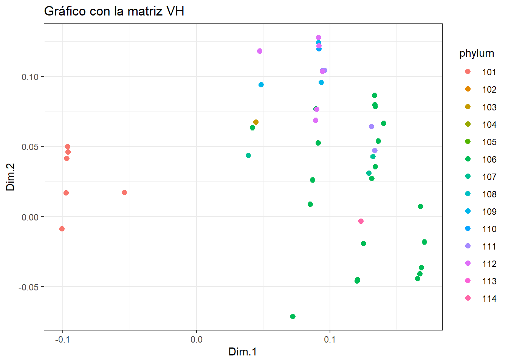

library(tidyverse)
library(ggplot2)
library(mds)Entrega5 AD: MDS
El metabolismo se caracteriza por reacciones químicas vinculadas entre sí, creando una compleja estructura de red. Una representación simplificada del metabolismo, que denominamos red metabólica abstracta, es un grafo en el que las vías metabólicas son nodos y existe una arista entre dos nodos si sus correspondientes vías comparten uno o más compuestos.
Para explorar los potenciales y límites de una representación tan básica, hemos empleado tres tipos de kernels (distancias entre grafos):
VH (Vertex histogram): solo tiene en cuenta si las etiquetas de los nodos de los grafos que se comparan son iguales o no.
SP (Shortest-Path): compara los grafos en función de sus caminos más cortos. Intuitivamente, esto significa medir lo fácil o difícil que es conectar, a través de compuestos compartidos, parejas de caminos en los dos grafos.
PM (Pyramid Match): mide la similitud de las características topológicas (por ejemplo, la conectividad) de los nodos con la misma etiqueta en los dos grafos comparados.
La práctica consiste en representar gráficamente (con solo 2 coordenadas principales) las matrices de similitud generadas por cada kernel coloreando los puntos de acuerdo al grupo de animales de acuerdo a su phylum.
Datos
Cargamos las librerías
Cargamos las matrices de datos
lista_animales = read.table("fileListANIMAL_phylum.txt")
nombres = lista_animales[,1]
phylum = lista_animales[,2]
datos_VH = read.table("ANIMALS-matrixVH.txt")
colnames(datos_VH) = nombres
rownames(datos_VH) = nombres
datos_SP = read.table("ANIMALS-matrixSP.txt")
colnames(datos_SP) = nombres
rownames(datos_SP) = nombres
datos_PM = read.table("ANIMALS-matrixPM.txt")
colnames(datos_PM) = nombres
rownames(datos_PM) = nombresPuesto que nos dan la matriz de similaridad, vamos a convertirla en una matatriz de distancias.
dist_VH <- sqrt(2*(1-datos_VH))Tenemos la lista de animales con su phylum y tres matrices de distancias o similitudes. Estas matrices son cuadradas de dimensión 370, que sería el número de observaciones del dataset original.
vh.mds<-cmdscale(dist_VH,k=2)Con el resultado del análisis de MDS, creamos el siguiente data frame añadiendo una nueva variable tipo factor que nos indique a que phylum pertenece (14 niveles).
df_vh.mds = cbind(data.frame(vh.mds), as.factor(phylum))
colnames(df_vh.mds) = c("X", "Y", "phylum")
glimpse(df_vh.mds)Rows: 370
Columns: 3
$ X <dbl> -0.1007984, -0.1007984, -0.1007984, -0.1007984, -0.1007984, -0.…
$ Y <dbl> -0.008738438, -0.008738438, -0.008738438, -0.008738438, -0.0087…
$ phylum <fct> 101, 101, 101, 101, 101, 101, 101, 101, 101, 101, 101, 101, 101…plot(df_vh.mds$X, df_vh.mds$Y, pch = 19, col = factor(df_vh.mds$phylum), xlab = "Dim.1", ylab = "Dim.2")
legend("topleft",
legend = levels(factor(df_vh.mds$phylum)),
pch = 19,
cex = 0.7,
col = factor(levels(factor(df_vh.mds$phylum))))p <- ggplot(df_vh.mds, aes(x = X, y = Y, color = phylum)) +
geom_point(size = 2.2) +
labs(title = "Gráfico con la matriz VH", x = "Dim.1", y = "Dim.2") +
theme(legend.position = "right") +
theme_bw()
# Mostrar el gráfico
print(p)